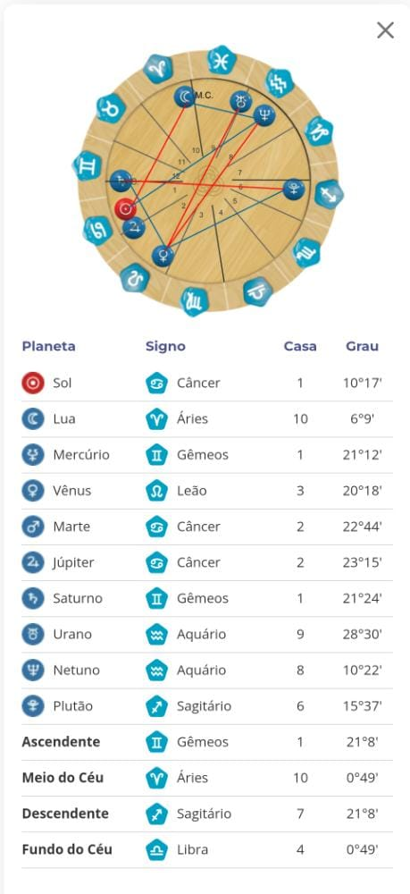

- Meu nome completo é Victória Guimarães dos Santos e não sei qual hobby escolher.
- Meu nome foi dado pela vitória do Brasil na copa de 2002 e pelo fato de ter nascido de 06 meses.
- Tenho muitos apelidos e a maioria é derivado do meu nome como: Vivi, Vic, Tória e muitos outros mas acho sem graça.
- Cada ciclo social me chama de uma forma e acho engraçado.
Sobre hobbies
- Leio fanfic desde os meus 09 anos, num geral sobre outros livros mas conheci o Justin Bieber pelas fanfic, antes nem sabia quem ele era!
- Gosto muito de pintar e minhas técnicas favoritas são: Aquarela e Pintura sobre tela com acrílica, mas como o material é mais caso me contento com aquarela e papel.
- A aréa de estética num geral me encanta de um jeito assustador, sou obececada por tudo no mundo da estetica desde cuidados com o corpo á moda e maquiagem.
- Tenho exatos 20 anos e dois meses (no dia 02/09/2022).
- Tenho algo muito engraçadinho com o número dois já que se repete muitas na minha data de nascimento. vezes na minha data de nascimento!
- Sou a filha mais velha por parte de pai e filha única por parte de mãe, mas sou a terceira mais nova de 13 netos dos meus avôs maternos
- Sou do Signo de Cancêr, com ascendente em gêmeos, lua em áries e vênus em leão (ou escorpião já que minha fica em duvida sobre meu horario de nascimento). 
- Falando sobre minha cor favorita, não tenho uma específica mas as cores que mais utilizo são: preto,
branco,
azul e vermelho.
- Minhas roupas geralmente seguem esse padrão de cor.
- Minhas pinturas quase sempre possuem tons quente.s
- Minhas unhas SEMPRE estão variando entre preto e tons de vermelho.
Quiz sobre Torinha
Se indetifique:
Prepare-se
- Qual o hobby que mais consome o meu tempo?
- Baseado na minha data de nascimento, qual o meu número da sorte?
- Dentre as cores apresentadas qual mais combina comigo?
- Do tanto que me conhece até agora, o quão canceriana eu sou?
- Tendo base nas ultimas informações qual música você associaria a mim?